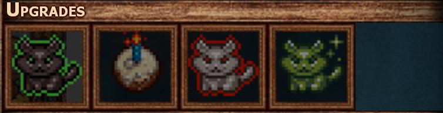
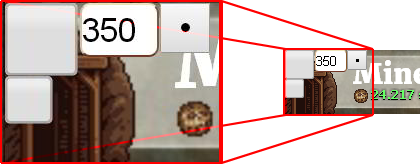
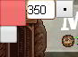
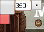
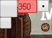
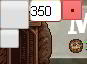

This is an addon for the Cookie Clicker game. It tries to fulfill all the clicking needs of the player. It almost eliminates the main objective of the game: to click.
As it may seems, it is not a cheating addon. It doesn't even use the techniques described in Cheating | Cookie Clicker Wiki.
This addon was developed for Cookie Clicker v2.0042. Unless major improvements in game code, it should work with future versions.
Install
You can download the script from here. Then, you can either use a userscript manager or the console of your browser.
Copy the content of CookieMngr.js and paste it in appropriate field. In case you don't have a userscript manager, you will have to use the console of your browser each time you play Cookie Clicker. That's it.
Buttons
After this script has run, you will be able to see 4 new buttons in the top bar.
Click me-----→ () ←-----Click me
Start clicking
Click me-----→ ←-----Click me
By clicking this, it will start clicking the big cookie every 1/1000 of second and the button will turn red. Clicking again will turn the auto-clicker off and the color will revert to normal.
Auto buy
Click me-----→ () ←-----Click me
This will enable automatic purchase of items that can be purchased.
By default, the script will buy the last (and usualy more efficient) enabled building that is checked.
By checking the top option, the script will buy the first enabled building in the list. In case you switch to the Sell option, the script will do nothing. It only buys. It doesn't sell buildings.
Auto upgrade
Click me-----→ ←-----Click me
Checking this one, will automatically buy the first upgrade, when it becomes available.
Open seasame
This one will open the built-in cheating interface. I didn't make anything here. I just provide an easier access.
Checkboxes
You will notice that each building has 4 new boxes to the left.
The big checkbox will allow the script to buy it, when it becomes enabled. If the checkbox is not checked, the script will not buy it, when it becomes enabled. But you can click it by hand and buy it, if you wish.
The smaller checkbox, under the big one, will check all the big checboxes in the list. Unless, they exceed the amount, beside the big checkbox. Clicking a checked small checkbox, will clear all the checks from the big checkboxes.
The numbers beside the checkboxes, are the highest number of buildings you want the script to purchase. If it is reached, the big checkbox is unchecked. The default numbers, reffer to the minimum buildings required to get the #building achievement for each building.
Next to the numbers, there is a button with a dot. This one, copies the number to the rest of buildings. Some buildings will excceed the maxed number alowed and may be unchecked, so beware.
Golden cookies
With auto-click enabled, the script will handle the presence of all the golden cookies, no matter how many they are, and only the golden cookies. It avoids wrath cookies.